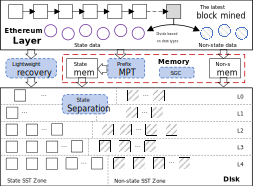
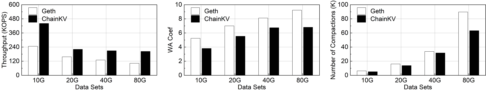
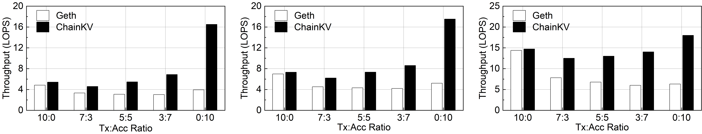
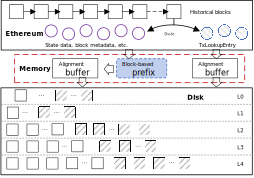
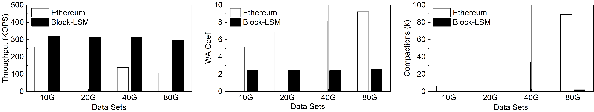

Semantics-Aware Key-Value store for Blockchain systems
Welcome to the Semantics-Aware KV store for Blockchain systems webpage. As certain blockchains progressively overcome the throughput limitation associated with the Proof-of-Work (PoW) consensus mechanism, the performance of the underlying storage engine has emerged as a crucial factor restricting blockchain performance. Consequently, we have developed a dedicated key-value (KV) storage engine specifically tailored for blockchain systems. It is designed to optimize the compatibility between the blockchain data layer and the underlying storage engine to improve the throughput during the blockchain persistence process. Next, we will present current results on this issue.
ChainKV: A Semantics-Aware Key-Value Store for Ethereum System
This paper has got accpeted in SIGMOD 2024 (CCF-A), the source code can be found
here.
Issue
As Ethereum completes the switch from PoW to PoS, the primary bottleneck limiting Ethereum throughput is no longer the substantial latency in achieving consensus. Instead, the performance of the storage engine becomes crucial due to the significant IO operations involved in packaging transactions and data for long-term retention. Nevertheless, our comprehensive analysis of existing Ethereum storage designs reveals two noteworthy observations. We summarize these observations as follows.
- Different types of blockchain data are mixed together on disk.
- In-memory MPT accesses show strong locality, but the same case does not happen on disk.
These factors cause blockchain data to be stored in a way that is highly incompatible with the underlying storage engine. Motivated by this, we designed ChainKV.
Design

ChainKV mainly comprises four functional components: state separation, Prefix MPT, space gaming cache (SGC), and the lightweight recovery mechanism.
- The state separation scheme aims to transfer the blockchain data semantics to the underlying storage engine to achieve independent management for different data types.
- The prefix MPT is an improved authenticated data structure that supports fast data queries on disk.
- The SGC scheme is an adaptive cache strategy that aims to adjust the cache space of different types of data based on real-time workloads.
- The lightweight crash recovery mechanism optimizes the write performance in the context of data reliability and consistency in blockchains. We will introduce these components in detail.
Evaluation


We can see that ChainKV provides better write performance (1.99X) for the four different sizes of datasets due to lower write amplification and fewer compactions inside ChainKV. Meanwhile, for three different distributed read workloads, ChainKV still outperforms the base design across the spectrum, with up to 4.2x speedup.
This paper has got accpeted in ICCD 2021 (CCF-B), the source code can be found
here.
Issue
The current Ethereum system uniformly transforms all its data into KV items ans stores them to the underlying LSM-tree stroage engine, this straightforward approch thros away some important blockchain semantics, such as the block sequence, resulting in substantial meaningless I/O overheads (i.e., compaction operations) in the underlying storage engine. Our preliminary work found that such meaningless IO is a significant burden on the Ethereum storage engine. Therefore, we propose a Ether-aware block-ordered LSM-tree based KV storage engine to alleviate the key range overlaps of different layer inside stroage engine.
Design

ChainKV mainly comprises four three components: Block Group-based Prefix, SSTable aligment, and Attribute-oriented Memory Buffers.
- Block Group-based Prefix aims to assign a set of consecutive blocks with the same prefix value, which will be shared by the data generated when these blocks fall off the disk, while minimizing the storage overhead.
- SSTbale alignment is used to align the sizes of SSTable and KV items, which can flexibly perform the flush operations to ensure that all KV pairs related to the same transaction block are always stored in the same SSTable files.
- Considering that not all data add prefixes, Attribute-oriented Memory Buffers scheme is used to isolate different types of data and aggregate data of the same type.
Evaluation

We can see that Block-LSM provides better write performance (3.7X) for the four different sizes of datasets due to lower write amplification and fewer compactions inside Block-LSM.